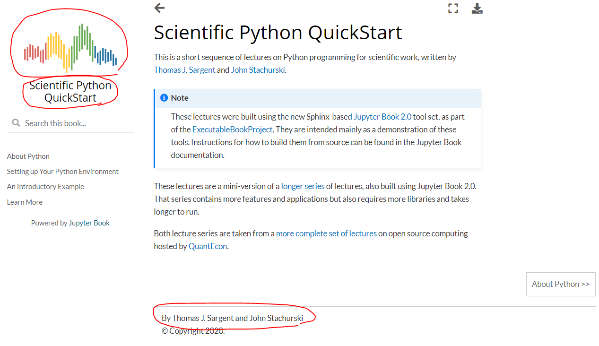
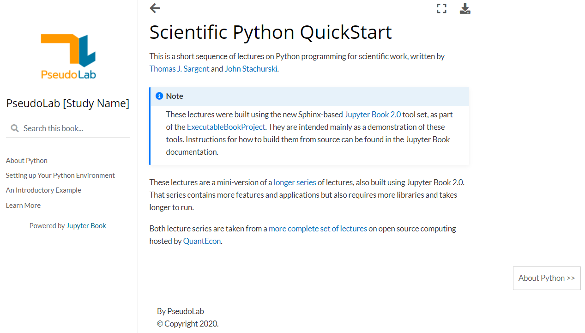
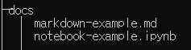
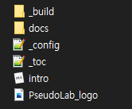

Step 2. template 내용 수정¶
이번 단계에서는 step 1에서 생성한 template의 내용을 본인 니즈에 맞게 수정하는 법을 배울 것이다. template을 수정하기 위해선
환경설정 내용이 담긴
_config.yml파일Jupyter Book에 표출할 컨텐츠 파일
컨텐츠 파일의 목차 순서를 결정하는
_toc.yml파일
위 3개의 요소들을 수정해야 한다.
1. _config.yml 파일 수정¶
_config.yml파일은 본인이 주로 사용하는 텍스트 에디터로 열면 된다. 해당 파일에서 수정해야 할 것들에 대해 확인해보자.
1-1. title, author, logo 수정¶
title: Scientific Python QuickStart
author: Thomas J. Sargent and John Stachurski
logo: 'qe-logo-large.png'
_config파일을 열면 가장 먼저 title, author, logo 키 값이 존재한다. 해당 값들이 담당하는 내용은 아래와 같다.

title: 좌측 상단에 위치한 로고 아래에 있는 책 제목을 수정author: 페이지 하단에 있는By [author]을 수정logo: 좌측 상단에 표출 되는 로고 이미지를 수정
logo는 상대 경로를 입력 받는다. 즉, qe-logo-large.png파일과 _config.yml파일이 같은 폴더 내에 위치 하므로 qe-logo-large.png 값만 입력을 해준 것이다.
이번 튜토리얼에서는 title, author, 그리고 logo를 가짜연구소 관련 내용으로 수정해보겠다. 독자들은 각자 본인 니즈에 맞는 내용들로 입력하면 될 것이다.
title: PseudoLab [Study Name]
author: PseudoLab
logo: 'PseudoLab_logo.png'
그리고 나서 jupyter-book build [책이 위치한 경로] 명령어를 활용해 다시 한번 build를 실시해보겠다.
jupyter-book build mini_book
생성된 링크를 브라우저에 붙여넣어 이동해보면 아래 그림과 같이 title, author, logo가 수정된 것을 확인할 수 있다.

1-2. description 수정¶
description 키에는 책에 대한 간략한 설명을 적어주면 된다.
description: >-
Basic Jupyter Book template for PseudoLab studies
1-3. execute_notebooks 수정¶
execute의 하위 키인 execute_notebooks키에는 Jupyter Book을 build할 때 .ipynb파일의 실행 여부를 결정한다. build를 할 때 마다 셀을 실행시키는 것은 번거롭기 때문에 off로 설정해준다.
execute:
execute_notebooks: off
1-4. repository 수정¶
repository 키에는 Github 버튼을 눌렀을 시 이동하는 곳의 경로를 입력해주면 된다. 이번 튜토리얼이 끝나면 완성될 Jupyter Book을 업로드할 예정인 원격 repository의 경로를 입력해주면 된다. 필자는 아래와 같이 경로를 수정했다.
repository:
url: https://github.com/pseudo-lab/Jupyter-Book-Template
path_to_book: "book"
url: 원격 repository 경로 입력path_to_book: 원격 repo 내에 Jupyter Book 구성 파일이 존재하는 폴더명 입력
1-5. html 추가¶
html키를 추가 하는 이유는 favicon과 Github 버튼, 그리고 댓글 기능을 추가하기 위해서다. favicon은 Chrome 탭창에 나타나는 작은 아이콘을 뜻한다.
다음과 같이 html키와 하위 키인 favicon을 추가한 후, favicon으로 사용할 이미지의 상대 경로를 입력해주면 된다.
html:
favicon: 'PseudoLab_logo.png'
Github 버튼은 페이지 상단에 추가가 되며, 앞서 repository 키 값에 설정한 url/path_to_book 경로로 이동하게 된다. 또한 각 컨텐츠 페이지 별로 버튼만 누르면 Github Issue를 생성하게 해준다. 아래 코드로 추가 할 수 있다.
html:
favicon: 'PseudoLab_logo.png'
use_issues_button: true
use_repository_button: true
댓글 기능은 추후 정리 예정
1-6. exclude_patterns 추가 (Optional)¶
Jupyter Book이 올바르게 build되기 위해선 폴더내의 모든 .ipynb파일과 .md파일은 _toc.yml파일에 목차로 등재가 돼야 한다. _toc.yml에 등재되지 않은 파일이 존재한다면 build시 오류가 발생한다. 이를 해결하는 방법은 크게 두가지가 있다.
exclude_patterns키 추가
exclude_patterns: [draft/*]
위 코드를 _config.yml에 추가하면 draft 폴더 내에 있는 모든 파일은 build시 제외하겠다라는 의미가 된다. 그러므로 _toc.yml에 기록하지 않은 파일들을 draft폴더 내에 모두 위치시켜 build시 발생하는 오류를 회피할 수 있다.
only_build_toc_files키 추가
다른 방법은 only_build_toc_files키를 추가 하여 _toc.yml파일에 등재된 파일들만 build를 실시하는 방법이다.
only_build_toc_files: true
위 코드를 _config.yml파일에 추가해 _toc.yml내 기록된 파일만 build되도록 설정할 수 있다.
2. 컨텐츠 파일 추가¶
_config.yml 파일 설정이 끝났으므로, Jupyter Book에 표출될 컨텐츠를 수정해보겠다.
2-1. docs 폴더 내부에 있는 파일 삭제¶
mini_book내에 위치한 docs폴더 내부에 컨텐츠 파일들이 존재한다. quantecon-mini-example에서 기본적으로 제공하는 컨텐츠는 사용하지 않을 것이므로 모두 삭제를 해주겠다. about_py.md, getting_started.md, index.md, learn_more.md, python_by_example.md, quant-econ.bib 파일을 모두 삭제한다.
2-2. _bibliography, _static 폴더 삭제¶
컨텐츠 내용을 수정함에 따라 더 이상 필요가 없어진 _bibliography 폴더와 _static폴더를 삭제해준다.
2-3. markdown 예시 파일 생성¶
그 후, markdown 문법 예시를 보여주기 위해 아래의 내용으로 markdown 문서를 작성해서 markdown-example.md 파일명으로 docs폴더 내에 저장하겠다.
# markdown 예시
Jupyter Book은 markdown 문서를 지원합니다.
아래와 같은 예시 코드를 입력하면 markdown 문법이 적용됩니다.
```
# This is an <h1> tag
## This is an <h2> tag
###### This is an <h6> tag
*This text will be italic*
_This will also be italic_
**This text will be bold**
__This will also be bold__
_You **can** combine them_
* Item 1
* Item 2
* Item 2a
* Item 2b
1. Item 1
1. Item 2
1. Item 3
1. Item 3a
1. Item 3b
```
입력 결과
# This is an <h1> tag
## This is an <h2> tag
###### This is an <h6> tag
*This text will be italic*
_This will also be italic_
**This text will be bold**
__This will also be bold__
_You **can** combine them_
* Item 1
* Item 2
* Item 2a
* Item 2b
1. Item 1
1. Item 2
1. Item 3
1. Item 3a
1. Item 3b
2-4. .ipynb 예시 파일 생성¶
다음으로는 .ipynb파일이 구성되는 것을 보여주기 위해 .ipynb 예시 파일을 작성하겠다. 아래 코드를 .ipynb파일에 추가 하고 실행 시킨 뒤, notebook-example.ipynb 파일명으로 docs 폴더 내부에 저장한다.
import pandas as pd
pd.options.plotting.backend = "plotly"
df = pd.DataFrame(dict(a=[1,3,2], b=[3,2,1]))
fig = df.plot()
fig.show()
최종적으로 아래와 같이 2개의 파일이 docs폴더 내부에 위치할 것이다.

2-5. 랜딩 페이지 작성¶
웹사이트에 가장 처음 접속했을 때 표출되는 페이지를 랜딩 페이지 (Landing Page)라고 한다. 랜딩 페이지에 해당되는 intro.md파일을 작성해보겠다.
# Jupyter Book Template for PseudoLab
가짜연구소 자료 정리를 위한 Jupyter Book Template 입니다.
intro.md파일은 docs의 부모 경로에 위치 시키는 것을 권장한다. 즉, _config.yml파일과 _toc.yml파일과 같은 위치에 위치 시키는 것이다. 파일이 root 위치로 부터 깊숙히 자리할 때 마다 웹페이지의 URL 길이가 길어지기 때문이다.
최종적으로 아래와 유사한 구조가 mini_book폴더 내에 생성됐을 것이다.

3. _toc.yml 파일 수정¶
이제 생성한 .ipynb파일과 .md파일의 목차 순서를 결정하는 _toc.yml파일 수정을 진행하겠다. 해당 파일을 텍스트 에디터로 열면 다음과 같은 내용이 있을 것이다.
# - file: README
- file: docs/index
sections:
- file: docs/about_py
- file: docs/getting_started
- file: docs/python_by_example
- file: docs/learn_more
주석문 처리된 첫번째 줄은 삭제해도 된다. 그 다음 줄에 있는 file 키에 랜딩 페이지로 사용할 파일을 명시해주면 된다. 상대경로를 입력하면 되는데, intro.md파일이 _toc.yml과 같은 위치에 있으므로 intro를 입력해주면 된다. 여기에서 파일명은 생략한다.
- file: intro
sections:
- file: docs/about_py
- file: docs/getting_started
- file: docs/python_by_example
- file: docs/learn_more
다음으로 sections 내부에 있는 하위 file키에 해당하는 값들을 수정해주면 되는데, 본인이 표출하고자 하는 목차 순서대로 구성해주면 된다. markdown-example.md 파일을 앞에, 그리고 notebook-example.ipynb파일을 뒤에 구성해보겠다.
- file: intro
sections:
- file: docs/markdown-example
- file: docs/notebook-example
그 후, 목차명을 정해야 한다. default 값으로 목차명은 해당 컨텐츠 페이지에 markdown h1 값으로 구성된 문자열 값을 목차명으로 사용한다. 그 외의 값을 목차명으로 사용하고 싶다면 다음과 같이 title 키를 추가해주면 된다.
- file: intro
sections:
- file: docs/markdown-example
title: markdown 예시
- file: docs/notebook-example
title: .ipynb 파일 예시
위와 같이 구성하는 것 외에도 다양한 방법이 있으니 공식 홈페이지를 참고하기 바란다.
4. 변경된 구조로 build하기¶
기존에 제공되던 quantecon-mini-example template을 사용자 니즈에 맞게 다시 구성을 했다. 이제 변경된 구조를 활용해 Jupyter Book을 생성할 것이다. 이번 예시 처럼 파일 컨텐츠 및 파일 목차 구조를 모두 변경할 정도의 대규모 업데이트를 진행했다면 build를 하기전에 기존에 build한 기록들을 삭제한 후 진행하는 것을 권장한다. 자칫 하다간 경로가 꼬일 수 있기 때문이다. 아래 명령어를 통해 기존에 build한 파일을 제거할 수 있다.
jupyter-book clean --all mini_book
위 명령어는 build가 꼬일 때 마다 사용해주면 웬만한 에러는 해결해준다.
clean을 해준 후 다시 build를 하여 새롭게 구성된 template을 확인할 수 있다.
jupyter-book build mini_book
지금까지 본인 만의 Jupyter Book template 만드는 과정을 실습해보았다. 다음 단계에서는 Github Pages 기능을 활용해 온라인으로 본인의 Jupyter Book을 배포하는 것을 실습하겠다.